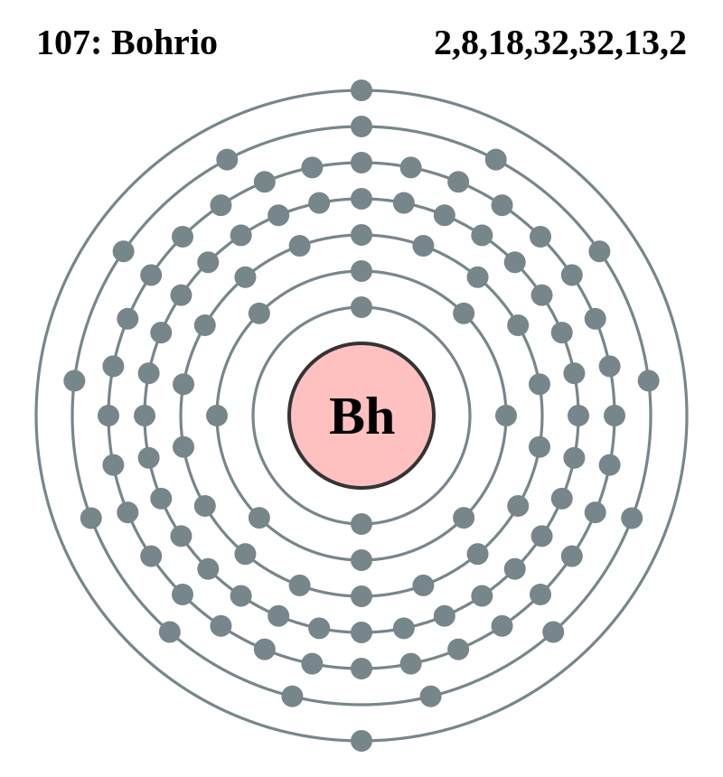

|
|
||
|
Bohrio El bohrio es un elemento radiactivo y sintético que no se encuentra en la naturaleza. Su isótopo más estable tiene un período de semidesintegración de aproximadamente 1 minuto. Aunque sus propiedades químicas se han caracterizado únicamente en parte, es similar a otros elementos del grupo siete. De los 12 que se han sintetizado, el bohrio no tiene isótopos naturales ni estables. Uno de ellos presenta un estado metaestable y algunos pueden sufrir fisión espontánea. |
 |
DATOS Número Atómico: 107 Peso Atómico: 270 Electronegatividad: - Configuración Electrónica: [Rn]5f146d57s2 Estados de Oxidación: N/A No. de Electrones de Valencia: 7 |